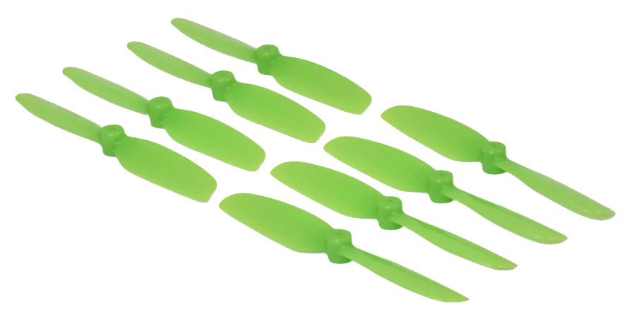

Aerodynamics
This section introduces the fundamental aerodynamic principles that govern how a multirotor generates thrust and responds to forces in the air. We look at why a spinning propeller produces thrust, how drag appears as a natural consequence of motion, and how these effects scale with speed. Understanding these relationships is essential before we can discuss control, since every maneuver a quadcopter performs ultimately depends on how its propellers interact with the surrounding flow.
Airfoil
Every mathematical model of a drone includes aerodynamic parameters. To understand where they come from, let’s begin by examining the aerodynamic forces acting on an airfoil, the building block of any wing or propeller blade.
Aerodynamic forces
The figure below shows a cross section of an airfoil, a body shaped to generate lift when placed in an airflow:

While the airfoil is designed to produce a desired lift force \({\color{var(--c2)}f_l}\) (perpendicular to the velocity \({\color{var(--c1)}v}\)), it also produces an undesired drag force \({\color{var(--c2)}f_d}\) (parallel to the velocity \({\color{var(--c1)}v}\)):
Where:
- \(\rho\) — Air density (\(\text{kg/m}^3\))
- \(A\) — Surface area (\(\text{m}^2\))
- \(C_l\) — Lift coefficient (dimensionless)
- \(C_d\) — Drag coefficient (dimensionless)
- \({\color{var(--c1)}v}\) — Linear velocity of the airfoil (\(\text{m/s}\))
Aerodynamic coefficients
The lift and drag coefficients are not constant. They vary according to three main aerodynamic conditions:
- Angle of attack (\(\alpha\)): the angle between the airfoil’s mean line (its chord line) and the airflow velocity vector
-
Reynolds number (\(Re = \frac{\rho {\color{var(--c1)}v} D}{\mu}\)): a dimensionless quantity defining the flow regime, which can be laminar(1) or turbulent(2)
- \(Re<2300\)
- \(Re>4000\)
-
Mach number (\(M = \frac{\color{var(--c1)}v}{v_s}\)): the ratio between the airspeed and the speed of sound, which defines whether the flow is subsonic(1), supersonic(2) or hypersonic(3)
- \(M<1\)
- \(1<M<5\)
- \(M>5\)
For airfoils operating in laminar flow at subsonic speeds, the angle of attack is the dominant factor:

There are many possible airfoil shapes. One of the most widely used profiles is the Clark Y, whose lift and drag coefficients as functions of the angle of attack are well known and shown below(1):
- Assuming the Reynolds and Mach numbers remain within typical laminar subsonic ranges.

While the drag coefficient increases monotonically with \(\alpha\), the lift coefficient reaches a maximum around \(\alpha = 18^{\circ}\). This point is known as the stall, which occurs when the airflow separates from the wing’s upper surface, creating turbulence and loss of lift. Note also that the lift coefficient is zero for a small negative angle and becomes negative only below that.
Exercise 1.1
To consolidate these concepts, consider a fixed-wing drone (flying wing) using Clark Y airfoils, flying in level cruise with the following parameters:

- Mass: \(m = 40~\text{g}\)
- Length: \(l = 10~\text{cm}\)
- Wing span: \(b = 10~\text{cm}\)
- Propeller efficiency: \(\eta_p = 60~\%\)
- Motor efficiency: \(\eta_m = 75~\%\)
- ESC efficiency: \(\eta_e = 95~\%\)
- Battery efficiency: \(\eta_b = 95~\%\)
- Battery voltage: \(e_s = 3.7~\text{V}\)
- Battery capacity: \(q_s = 350~\text{mAh}\)
- Gravitational acceleration: \(g = 9.81~\text{m/s}^2\)
- Air density: \(\rho = 1.225~\text{kg.m}^{-3}\)
a) Draw the free-body diagram of the forces acting on the drone.

b) Compute the total wing area assuming the body is triangular.
Given that it is a flying-wing drone, the wing area can be approximated as a triangle with a base equal to the wing span and a height equal to the length of the drone:
c) Determine the lift and drag coefficients of the drone’s wings.
Since the drone is flying in level cruise with zero angle of attack, we can read the coefficients from the Clark Y airfoil graph:
d) Compute the drone’s cruise speed.
In level cruise, the net vertical force is zero, allowing us to compute the cruising velocity:
e) Compute the thrust generated by the propellers.
In level cruise, the net horizontal force is zero, which allows us to compute the thrust force:
f) Calculate the mechanical and electrical power required.
Mechanical power is given by the product of thrust and velocity:
The electrical power accounts for the propulsion system efficiency:
g) Estimate how long the drone can stay airborne.
The total energy stored in the battery is given by the product of its voltage and capacity:
Dividing this energy by the electrical power consumption gives an estimate of the flight time:
Propeller
A propeller consists of \(n\) blades(1), each of which can be treated as an individual airfoil.
- Typically 2–4 blades, though certain applications may use 5–6.
Aerodynamic forces and torques
As the propeller spins, each blade generates lift and drag forces, as illustrated below:

Where:
- \(d\) — Distance from the pressure center to the rotation axis (\(\text{m}\))
- \({\color{var(--c1)}\omega}\) — Angular velocity of the propeller (\(\text{rad/s}\))
Exercise 1.2
Derive the expressions for the lift \({\color{var(--c2)}f_l}\) and drag \({\color{var(--c2)}f_d}\) forces acting on the propeller blades as functions of the angular velocity \({\color{var(--c1)}\omega}\).
Answer
Starting from the general lift equation and substituting \({\color{var(--c1)}v} = {\color{var(--c1)}\omega} d\) gives:
Repeating the same procedure for the drag force yields:
The lift and drag forces on each blades can be represented by an equivalent thrust force and drag torque on the propeller, as shown below:

Exercise 1.3
Determine the thrust force \({\color{var(--c2)}f}\) and drag torque \({\color{var(--c2)}\tau}\) of the propeller.
Answer
The thrust force \({\color{var(--c2)}f}\) of the propeller is simply the sum of each blade lift force \({\color{var(--c2)}f_l}\):
Whereas the drag torque \({\color{var(--c2)}\tau}\) is the sum of each blade drag force \({\color{var(--c2)}f_d}\) multiplied by its arm \(d\):
Since all other parameters are constant, the thrust and drag torque depend only on the square of the angular velocity:
Where:
- \(k_l\) — Thrust constant (\(\text{N.s}^2\text{/rad}^2\))
- \(k_d\) — Drag constant (\(\text{N.m.s}^2\text{/rad}^2\))
Aerodynamic constants
These two constants fully describe how a propeller converts rotational speed into force and torque:

Exercise 1.4

Using a ruler, roughly estimate(1) the thrust constant \(k_l\) and drag constant \(k_d\) of the Bitcraze Crazyflie 2.1 brushless propellers. Assume the blade shape resembles a Clark Y profile with an angle of attack \(\alpha = 5^\circ\), where the lift coefficient is similar, but the drag coefficient is eight times larger(2).
- We are interested only in the order of magnitude.
- Due to additional turbulence generated by the propeller.
Answer
The air density can be assumed as:
The surface area can be estimated with a ruler assuming each blade is a rectangle:

The coefficients can be determined from the Clark Y airfoil graph with an angle of attack \(\alpha = 5^\circ\):
The distance from the pressure center to the rotation axis can be estimated with a ruler:

With all those values, the thrust and drag constants can be determined:
These two parameters will later be determined experimentally in the indentification section of thrust constant and drag constant, and you’ll find that the measured values closely match these estimates.
Exercise 1.5
To consolidate these ideas, consider a quadrotor drone hovering in place with the following parameters:
- Mass: \(m = 40~\text{g}\)
- Thrust constant: \(k_l = 2.4\times10^{-8}~\text{N·s}^2\text{/rad}^2\)
- Drag constant: \(k_d = 1.6\times10^{-10}~\text{N·m·s}^2\text{/rad}^2\)
- Motor efficiency: \(\eta_m = 75~\%\)
- ESC efficiency: \(\eta_e = 95~\%\)
- Battery efficiency: \(\eta_b = 95~\%\)
- Battery voltage: \(e_s = 3.7~\text{V}\)
- Battery capacity: \(q_s = 350~\text{mAh}\)
- Gravitational acceleration: \(g = 9.81~\text{m/s}^2\)
- Air density: \(\rho = 1.225~\text{kg·m}^{-3}\)
a) Draw the free-body diagram of the forces acting on the drone.
b) Compute the angular velocity of the propellers.
In hover, the net vertical force is zero, allowing us to compute the angular velocity of the propellers:
c) Compute each motor torque.
Since the angular velocity of the motors is constant, their net torque is zero, which allows us to compute the motor torque:
d) Calculate the mechanical and electrical power required.
Mechanical power is given by the product of torque and angular velocity times the number of motors:
The electrical power accounts for the propulsion system efficiency:
e) Estimate how long the drone can stay airborne.
The total energy stored in the battery is given by the product of its voltage and capacity:
Dividing this energy by the electrical power consumption gives an estimate of the flight time:
Compare this result with the fixed-wing drone from Exercise 1.1. Notice how the fixed-wing configuration can stay airborne nearly eight times longer, though it cannot hover or perform vertical take-off and landing like a multirotor drone. Those are the advantages and disavantages of each configuration